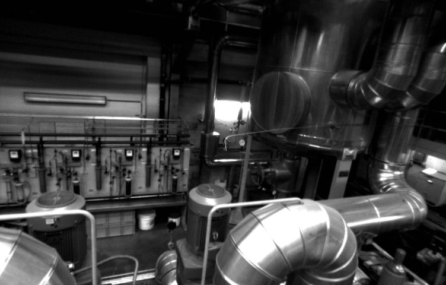

A project for Vermeer
How fast does camera‑only navigation drift?
I built a monocular visual odometry pipeline, ran it on a real drone flight with motion-capture ground truth, then degraded the camera 12 ways and flew it over flat ground, to measure how far a camera’s position estimate wanders from the truth.

- Position error over an 80 m flight
- 0.61 m
- Drift per 10 m flown, steady with distance
- 6.5%
- Controlled stress experiments
- 13
- More drift over flat ground
- ~15×
The project in brief
The problem
Drones usually know where they are from GPS, which can be jammed or faked. Without it, a drone can work out how it’s moving from its own camera, a technique called visual odometry. But every small error adds to the last, so the estimated position slowly drifts away from the truth.
What I did
I wrote a visual odometry pipeline in Python and OpenCV and ran it on a real 80 m indoor drone flight whose true path is known precisely (the EuRoC dataset). I measured how fast the estimate drifts, then degraded the video 12 ways and built a simulated flight over flat ground to see what makes it worse.
What I found
About 0.65 m of error for every 10 m flown, growing steadily. Image noise hurts accuracy most, blur and dropped frames make tracking fragile, and flat ground makes drift about 15× worse: exactly where a drone needs an absolute fix such as matching its view against a map.
80 metres of real drone flight
EuRoC Machine Hall 01. The estimated path (red) against motion-capture ground truth (grey, dashed), seen from above after a best-fit alignment.
Ground truth Visual odometry
A straight line: about 0.65 m more error for every 10 m flown. Over 1 km without GPS that is tens of metres from vision alone.
How the pipeline works
Track
Shi-Tomasi corners followed frame to frame with pyramidal KLT optical flow; a new keyframe after 10 px of image motion.
Estimate motion
Essential matrix with RANSAC gives rotation and direction of travel. Steps with few inliers or implausible rotation are rejected.
Chain poses
Relative motions chained into a path and converted from the camera frame to the drone’s body (IMU) frame.
Evaluate
Absolute error after SE3 alignment, and relative error over 2, 5, 10 and 20 m segments with
evo. One script reruns everything.
Scope: one camera can’t measure absolute scale, so each step’s length comes from ground truth. What’s measured is rotation and direction drift: the part the camera is responsible for.
The same flight, degraded 12 ways
Drift per 2 m and per 10 m (lines) and lost or rejected motion estimates (bars) as each condition gets worse.
Drift per 2 m Drift per 10 m Lost + rejected steps
| Condition | Error (ATE) | Drift / 2 m | Drift / 10 m | Lost + rejected |
|---|
Flat ground breaks a downward camera
A synthetic downward-looking flight (24 m arc at 5 m height, exact ground truth) over the same texture: once with raised 1 m blocks, once perfectly flat.
Over a perfectly flat scene the essential matrix has two valid solutions, and the pipeline picks the wrong one often enough to multiply drift. Fields, desert, water and car parks all look like this from above. A production system needs plane-aware (homography) estimation or an IMU to break the tie.
What the data says
- Drift grows linearly with distance
- 6.5–8% at every segment length from 2 to 20 m. Vision alone can’t hold position over a long flight; it needs a correction source such as an IMU, map matching or satellite imagery.
- Flat terrain is the worst case
- About 3% drift per 10 m with depth in the scene, about 55% over flat ground. Repeatable across runs.
- Image noise hurts the most
- Short-range drift rose from 8% to 12% per 2 m and the absolute error more than doubled at σ = 30 (0.61 → 1.44 m): noise moves the corners KLT tracks.
- Blur and dropped frames cost robustness first
- Drift per 10 m barely moved, but lost or rejected steps rose from 2 to 27 (heavy blur) and 36 (every 4th frame): the system gets close to losing track before accuracy changes.
- Darkness alone did little
- Tracking ignores uniform brightness changes. Real low light adds sensor noise and motion blur, and the noise is what does the damage.
One run per condition: differences under about 2 percentage points are within run-to-run variation, so read the trends rather than single cells.
Two bugs worth knowing about
- Camera vs body frame. EuRoC ground truth is the IMU body’s pose. Comparing camera poses to it directly made relative errors look 7× worse; converting with the camera-to-body transform fixed it.
- OpenCV’s depth cutoff.
recoverPosedrops points farther than 50 step lengths by default. In a large hall with small steps that discarded most points and rejected two thirds of valid motion estimates.
Where I’d take it next
- Fuse the IMU gyro for rotation, removing most heading drift.
- Plane-aware (homography) motion estimation for downward cameras over flat terrain.
- Bound drift by matching against maps or satellite imagery.
- Benchmark against OpenVINS and ORB-SLAM3 on the same flights.
Daniel Engelberg
Robotics engineer, B.Sc. Mechanical Engineering (Technion). Authorized to work in the US, relocating to New York.